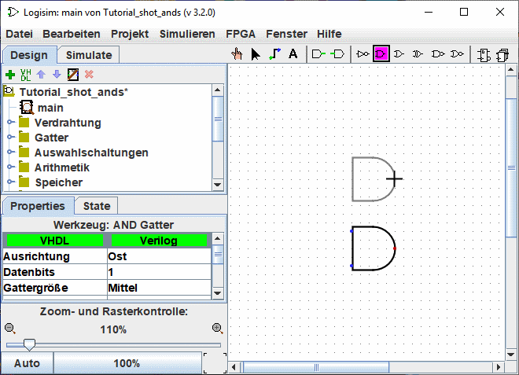
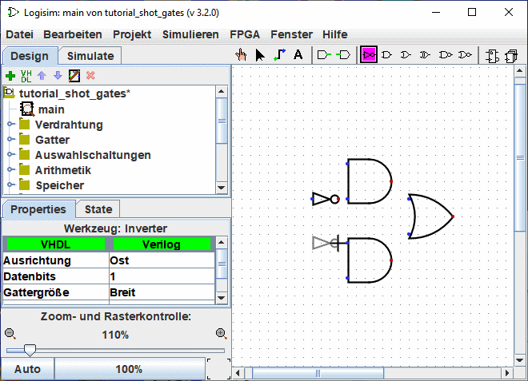
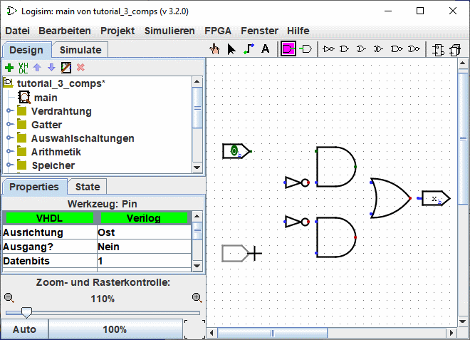

Früher: Schritt 0: Finden Sie sich zurecht
Schritt 1: Gatter hinzufügen
Erinnern Sie sich daran, daß wir die folgende Schaltung in Logisim aufbauen wollen.

Zunächst sollten wir die Gatter platzieren, um ein Gerüst zu erhalten. Später werden wir die Gatter mit Leitungen verbinden. Zunächst werden wir die zwei AND-Gatter hinzufügen. Klicken Sie auf das AND-Werkzeug auf der Werkzeugleiste ( , das vorletzte Werkzeug). Dann klicken Sie auf die Arbeitsfläche, dort, wo Sie das erste AND-Gatter platzieren möchten. Lassen Sie genügend Platz auf der linken Seite. Danach klicken Sie nochmals auf das AND-Werkezug und setzen Sie das zweite AND-Gatter unter das erste.
, das vorletzte Werkzeug). Dann klicken Sie auf die Arbeitsfläche, dort, wo Sie das erste AND-Gatter platzieren möchten. Lassen Sie genügend Platz auf der linken Seite. Danach klicken Sie nochmals auf das AND-Werkezug und setzen Sie das zweite AND-Gatter unter das erste.

Sehen Sie die fünf Punkte auf der linken Seite des AND-Gatters? Dies sind die Anschlußpunkte, an denen Sie Leitungen befestigen können. Diesmal werden wir nur zwei dieser Punkte für unsere XOR-Schaltung benötigen, aber für andere Schaltungen werden Sie vielleicht mehr Eingänge benötigen. Die Anzahl der Einträge kann in den Eigenschaften "Anzahl der Eingänge" der Komponente geändert werden.
Jetzt fügen wir die weiteren Gatter hinzu. Zunächst klicken Sie auf das OR-Werkzeug ( ), und platzieren das OR-Gatter in der Schaltung. Und dann setzen Sie die zwei Inverter vor den AND-Gattern mit dem "Inverter"-Werkzeug (
), und platzieren das OR-Gatter in der Schaltung. Und dann setzen Sie die zwei Inverter vor den AND-Gattern mit dem "Inverter"-Werkzeug ( ).
).

Hier wurde ein kleiner Abstand zwischen den Anschlüssen der Inverter und der AND-Gatter gelassen. Sie können die Anschlüsse aber auch gleich direkt aneinander setzen und ersparen sich damit das spätere Verdrahten dieser Anschlüsse.
Jetzt fügen wir die beiden Eingänge x und y hinzu. Wählen Sie das Eingangs-Werkzeug ( ) aus, und platzieren Sie die Pins. Mit dem Ausgangs-Werkzeug (
) aus, und platzieren Sie die Pins. Mit dem Ausgangs-Werkzeug ( ) sollten Sie ebenfalls einen Ausgang neben dem Ausgang des OR-Gatters platzieren. (Auch hier wurde wieder ein kleiner Abstand zwischen dem OR-Gatter und dem Ausgangsanschluß gelassen, aber Sie könnten diese auchn direkt aneinander setzen.)
) sollten Sie ebenfalls einen Ausgang neben dem Ausgang des OR-Gatters platzieren. (Auch hier wurde wieder ein kleiner Abstand zwischen dem OR-Gatter und dem Ausgangsanschluß gelassen, aber Sie könnten diese auchn direkt aneinander setzen.)

Wenn Sie nachträglich etwas verschieben wollen, dann wählen Sie das zu verschiebende Bauelement mit Hilfe des Bearbeitungswerkzeuge ( ) aus, und ziehen Sie es dann mit der Maus dorthin, wo Sie es gerne haben möchten. Mit dem Menü | Edit | → | Delete | bzw. mit der Entf-Taste bzw. Strg-X können Sie das Bauelement auch gleich aus der Schaltung entfernen.
) aus, und ziehen Sie es dann mit der Maus dorthin, wo Sie es gerne haben möchten. Mit dem Menü | Edit | → | Delete | bzw. mit der Entf-Taste bzw. Strg-X können Sie das Bauelement auch gleich aus der Schaltung entfernen.
Sie werden bemerkt haben, daß Logisim nach dem Einfügen eines neuen Bauelements automatisch zum Bearbeitungswerkzeuge ( ) zurück wechselt. Auf diese Weise können Sie das erstellte Bauelement sofort verschieben und es (wie wir gleich sehen werden) verdrahten. Wenn Sie ein soeben platziertes Bauelement kopieren wollen, so können Sie mit dem Tastaturkommando Strg-D die aktuelle Auswahl duplizieren (Einige Computer benutzen andere Tastenkombinationen für Menübefehle, auf einem Mac zum Beispiel die Kommando-Taste. Diese würden Sie hier zusammen mit der Taste D benutzen.)
) zurück wechselt. Auf diese Weise können Sie das erstellte Bauelement sofort verschieben und es (wie wir gleich sehen werden) verdrahten. Wenn Sie ein soeben platziertes Bauelement kopieren wollen, so können Sie mit dem Tastaturkommando Strg-D die aktuelle Auswahl duplizieren (Einige Computer benutzen andere Tastenkombinationen für Menübefehle, auf einem Mac zum Beispiel die Kommando-Taste. Diese würden Sie hier zusammen mit der Taste D benutzen.)
Weiter: Schritt 2: Leitungen hinzufügen